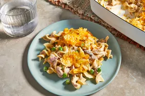
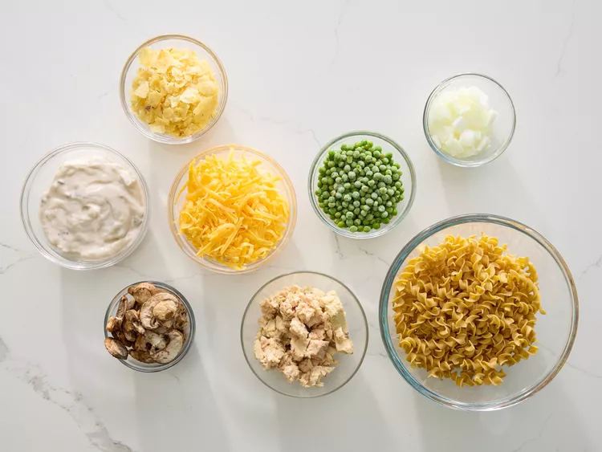
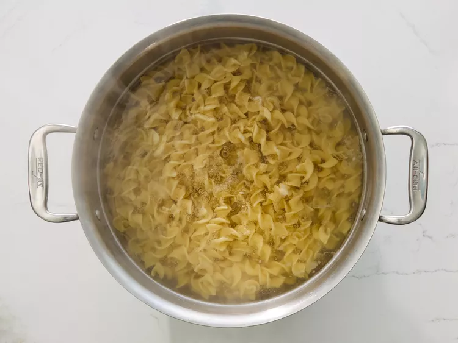
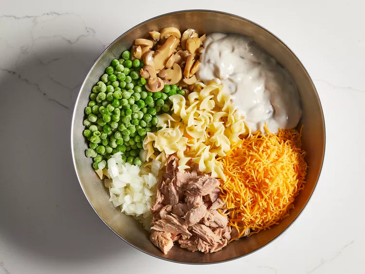
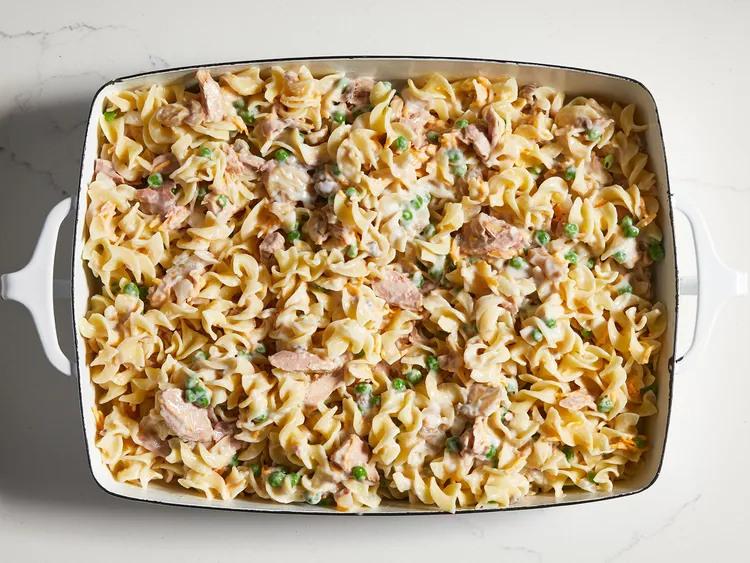
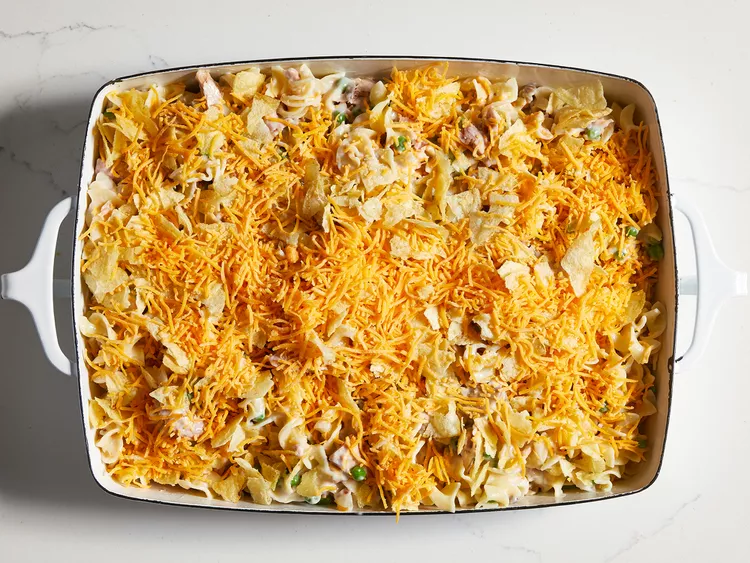
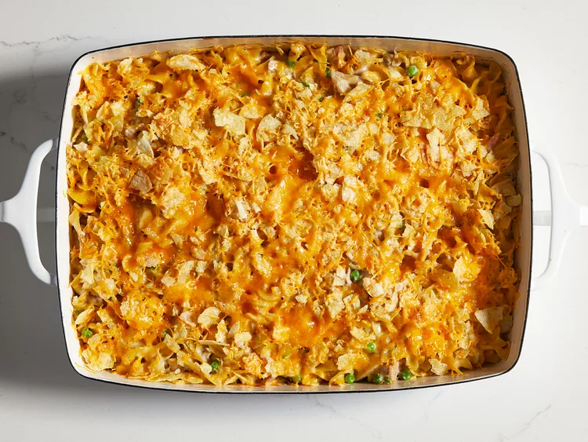
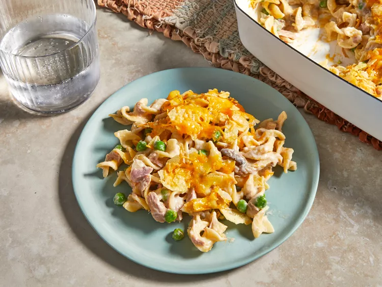

Best Tuna Casserole

Description
This baked best tuna casserole puts a fun twist on an old dish to
elevate a boring classic into a weeknight favorite!
Ingredients
- 1 (12oz) package egg noodles
- 2 (10.5oz) cans condensed cream of mushroom soup
- 2 cups shredded Cheddar cheese, divided
- 2 (5oz) cans tuna, drained
- 1 cup frozen green pease
- 1/2 (4.5oz) can sliced mushrooms
- 1/4 cup chopped onion
- 1 cup crushed potato chips
Steps
- Gather the ingredients.

- Fill a large pot with lightly salted water and bring to a boil. Add
egg noodles and cook until tender yet firm to the bite, 7 to 9 minutes;
drain. Meanwhile, preheat the oven to 425F (220C).

- Mix noodles, condensed soup, 1 cup cheese, tuna, peas, mushrooms, and
onion in a large bowl until evenly coated.

- Transfer the mixture into a 9x13in baking dish.

- Top the mixture with crushed potato chips and remaining 1 cup of
cheese.

- Bake in the preheated oven until cheese is melted and edges are lightly
golden, about 15 to 20 minutes.

- Serve hot. Enjoy!

Home